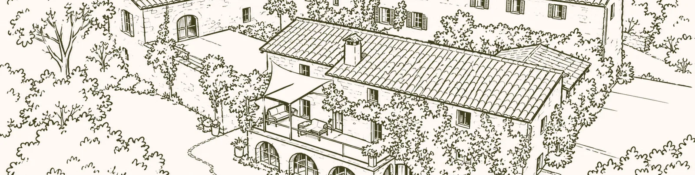

se marient
Ce site a besoin de JavaScript pour afficher les informations du mariage. Activez-le dans votre navigateur, puis rechargez la page.
Votre réponse
Ouvrir le formulaire dans une nouvelle page